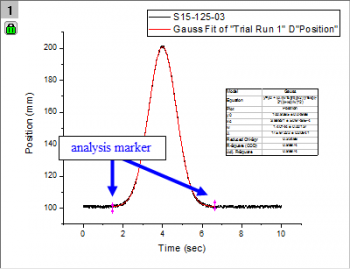

FAQ-285 Was sind diese Markierungen und was bedeutet das Schloss auf meinem Diagramm?
Markers-Lock
Letztes Update: 15.11.2018
Diese Pfeile oder Markierungen werden als Analysebereichsmarker bezeichnet. Sie markieren den Datenbereich, für den die Analyse durchgeführt wurde. Sie werden nur angezeigt, wenn Sie einen Unterbereich Ihrer Daten auswählen und eine Analyse durchführen, entweder im Modus Manuell oder Auto. Wenn Sie Keine wählen, können Sie diese Markierungen nicht auf Ihrem Diagramm sehen.
- 
Wenn Sie doppelt auf diese Markierungen klicken, öffnet sich der Analysedialog und gibt Ihnen die Möglichkeit, Änderungen vorzunehmen und die Analyse erneut auszuführen. Diese Markierungen werden weder gedruckt noch exportiert. Wenn Sie im Menü die Option Daten: Analysemarker wählen, haben Sie die Auswahl unter einer Anzahl von Anzeigeoptionen. Diese Optionen sind Vorlageneinstellungen, d.h., Sie können die Vorlage erneut speichern, um das Standardverhalten zu ändern.
Das Schloss ist ein Indikator für eine Operation, die Quelldaten mit einem Ergebnis verknüpft. Ein grünes Schloss weißt darauf hin, dass die Ergebnisse aktuell sind (d. h., das Ergebnis wird mit Hilfe der Quelldaten erzeugt).
-
- Wenn Neu berechnen = Manuell, wird jede Änderung in den Quelldaten das Schloss gelb anzeigen , um zu kennzeichnen, dass eine Neuberechnung erforderlich ist. Klicken Sie auf das Schloss und wählen Sie Neu berechnen, um die Ergebnisse zu aktualisieren.
- Wenn Neu berechnen = Auto, dann wird die Operation ohne Aufforderung ausgeführt und das Schloss grün angezeigt .
- In jedem Fall können Sie auf ein Schloss klicken und Parameter ändern wählen, um den Dialog der Operation erneut zu öffnen.
 |
Wenn ein Schlosssymbol dunkelgrau mit der Farbe  angezeigt wird, ist das ein Hinweis darauf, dass die zugehörige Operation in OriginPro in durchgeführt wurde und das Fenster oder Projekt in der Standardversion von Origin geöffnet wurde. Die Operation wird von der Standardversion von Origin nicht unterstützt. Um die Analyse zu modifizieren oder erneut durchzuführen, benötigen Sie einen Computer mit einer OriginPro-Lizenz. angezeigt wird, ist das ein Hinweis darauf, dass die zugehörige Operation in OriginPro in durchgeführt wurde und das Fenster oder Projekt in der Standardversion von Origin geöffnet wurde. Die Operation wird von der Standardversion von Origin nicht unterstützt. Um die Analyse zu modifizieren oder erneut durchzuführen, benötigen Sie einen Computer mit einer OriginPro-Lizenz.
|
|
Schlösser verbergen: Seit 2019 können Sie die Schlosssymbole in Ihrem Diagrammfenster verbergen, indem Sie auf das Diagramm klicken, Ansicht: Zeige im Hauptmenü wählen und das Kontrollkästchen Schlosssymbole deaktivieren. Dies entfernt nicht die verbundenen Operationen aus dem Diagrammfenster. Um die Symbole wieder anzuzeigen, wiederholen Sie den Vorgang.
Um die Schlossanzeige über LabTalk-Skript zu steuern:
page.lock=; // 0 = hide, 1 = show
|
Schlüsselwörter:Diagramme, Daten, nichtlinear, Regression, Pfeil, Magenta, Pink, Bereich, Analyse, grün, Bereich